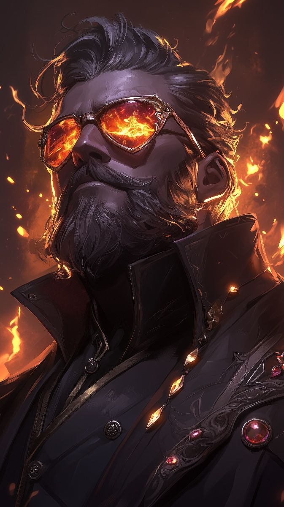
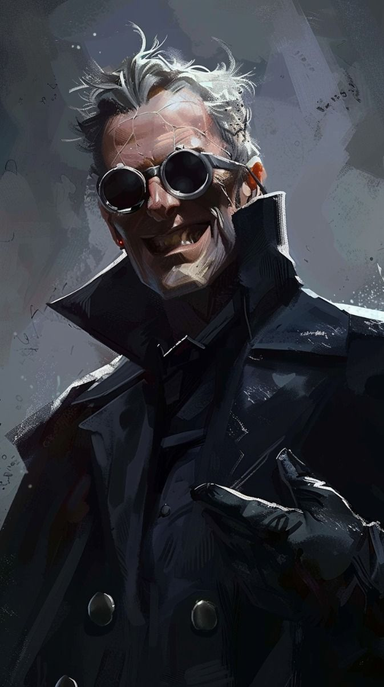

Karakter Müziği
CV-MÜZ · Campaign V
>_ Şu An Çalıyor
— Seçilmedi —
KARAKTER MÜZİĞİ
0:00
0:00
10

Ceren CÖMERT tarafından canlandırılmış ve oynanmıştır. Ceren'in ilk karakteridir. Aidiyet. Yalnızlık. Koşulluluk. Hırs. Pişmanlık... Bir canlının hayatı birkaç kelimeyle anlatılacak olsaydı, Cecilia'nın geride bıraktığı yirmi dört baharı bu beş sözcükten daha iyi özetleyen olmazdı.
Beyaz Şehirliydi Cecilia; fakat altın varaklı bir beşiğe doğmamıştı. Anne ve babası nam salmış kişilerdi ama bu şöhret, onun hayatı boyunca hiçbir yere ait hissedememesinin başlıca sebebi olacaktı.
Annesi Hislith, sıçan mahallesinin en arzulanan kadınıydı. Yıllar boyunca, gencinden yaşlısına birçok zihinde yalnızca hayaliyle bile zevk dolu anlar yaşatmıştı. Cebi yeterince dolu, sohbeti bir o kadar hoş müşterilerin yataklarında ise; altınlarla bezenmiş boynuzları, lavanta ve kehribar kokan bedeniyle nefes kesici geceler sunuyordu. Bir gün, mekan sahibi Thedok Hislith'e şunu söyledi: "Bu iş diğerlerine benzemez. Mazer'in yanına gidiyorsun." Bu ismi duyar duymaz Hislith, yıllardır hayalini kurduğu fırsatın nihayet geldiğini anladı. Attığı yemi büyük balık ısırmıştı.
Zamanla görüşmeler sıklaştı. Hislith artık ne mesai düzeninde çalışıyordu ne de başka müşterisi vardı. Hayatında yalnızca Mazer vardı. Ama bir süredir, en iyi peynir bile midesini bulandırıyordu. İşte o an, Hislith'in eli karnına gitti. Cecilia'yı fark ettiği ilk andı.
Doğum bir bahar gecesi başladı. Hislith yalnızdı; yanında yalnızca bir ebe vardı. Çocuk doğduğunda ağlamadı. Bebek nefes almıyordu. Teninin rengi soluktu, sanki yaşam ona hiç uğramamış gibiydi. Tam o sırada odanın ışığı hafifçe titredi. Duvarlardaki gölgeler uzadı, birbirine değdi. Odayı kısa ama keskin bir soğukluk geçti. Sanki görünmez bir el, çoktan alınmış bir şeyi yerine koymuştu — isteksizce.
Bebek nefes aldı. Zayıf, kesik bir ağlama yükseldi.
Hislith çocuğunu kucağına aldığında gözlerinden yaşlar süzüldü. "Cecilia," dedi fısıltıyla. "Benim ışığım." O gece Mazer başka bir yerdeydi. Ama hamisi, onun geride bıraktığını yalnız bırakmamıştı. Hislith bebeğini beşiğine yerleştirdiğinde fark etmedi; fakat Cecilia'nın gölgesi, beşiğin kenarında olması gerekenden biraz daha uzundu.
Yalnızlık hissi, Cecilia'nın zihnine sonradan yerleşmiş bir duygu değildi. Oradaydı. Hep vardı. Kendini bildi bileli sıçan mahallesinde, Mazer'in adamlarının gözetiminde yaşadı. Ona bakanlar vardı, ama onu isteyen kimse yoktu. Ailesini her sorduğunda aldığı cevap değişmezdi: "Zümrüt Şehir sana göre değil. Senin yerin orası değil."
O bir ayak bağıydı. Her gün, varlığını gerekçelendirmek zorundaydı. Ondan farklı olanlar onu şeytan dölü diye aşağılıyor, onun gibi olanlarsa bir fahişenin piçi olarak doğduğu için küçümsüyordu. Cecilia büyüdükçe evdeki görevleri de değişti. Yakınlardaki mekanlara küçük eşyalar bırakmak, mesaj taşımak… Kimsenin dikkat etmediği, kimsenin sormadığı işler. Bunları yaparsa babası Mazer'e faydası olacağı söylendi. Bu sebebi duyduktan sonra Cecilia verilen her görevi layığıyla yerine getirdi. Belki çocuğu olarak değil… ama yanında çalışanı olarak bile olsa, bu hayal ona yetiyordu.
Onlu yaşlarının başında, dar bir sokakta Lewon'ın ayak takımından dört kişi tarafından köşeye sıkıştırıldı. Kaçma ihtimali yoktu, çığlık atmadı. O an, boğazından kopan tuhaf bir kahkaha çıktı. Ve Cecilia'nın gölgesi değişti. Kırmızı gözleri ve keskin hatlarıyla bir şeytan figürü, tam arkasında belirdi. Kulakları tırmalayan bir kükreme dar sokağı doldurdu. Çocuklar paniğe kapılıp kaçtılar.
Sokak yeniden sessizleştiğinde Cecilia dizlerinin üzerine çöktü. Hıçkırıklar hâlinde ağlarken omzunda bir el hissetti. "Hey… dur. Geçti." Karşısında orta yaşlarda, iyi giyimli bir adam duruyordu. "İyi misin?" diye sordu. Bu soru Cecilia'yı afallattı. Kimse ona bunu sormazdı. Adam ayrılırken yalnızca şunu söyledi: "Adım Gallo. Belki yine karşılaşırız."
Gallo o kızda bir şey olduğunu anlamıştı. O büyü çağrılmamıştı, şekillendirilmemişti; taşmıştı. Korku, öfke ve hayatta kalma içgüdüsünün birleştiği bir anda Cecilia'nın içinden sızmıştı. Haftalarca onu takip etmedi ama yolları yeniden kesişti. Gallo soru sormuyordu; konuşacak alan bırakıyordu. Zamanla Cecilia, onun yanında ellerini daha az sıktığını, omuzlarının gevşediğini fark etti. Gallo bunu büyüyle açıklamıyordu. Güven, büyüden önce gelirdi.
Gallo, Serverus Hanesi'ne şunu yazdı: "Kenarda büyüyen bir potansiyel. Henüz şekilsiz, ama dikkat edilmeli." Araştırmalar haftalar sürdü. Ve sonunda saklanan gerçek ortaya çıktı: Cecilia, Mazer'in gayrimeşru kızıydı. Serverus Hanesi için tablo netti — eğitilmemiş ama nadir bir büyüsel potansiyel, üstelik Zümrüt Şehri'ne açılan sessiz bir kapı.
Mazer'e teklifte bulunuldu. Şartlarını sıraladı: Cecilia Serverusların himayesine girecekti. Adı Serverus soyuna bağlanmayacaktı. Mazer'den bir talepte bulunamayacaktı. Karşılığında Mazer, kız üzerindeki tüm hak iddiasından çekiliyordu. Serveruslar nadir bir potansiyeli alıyordu. Mazer ise, ileride karşısına dikilebilecek bir sorumluluğu oyun tahtasından kaldırıyordu. Cecilia'nınsa bunların hiçbirinden haberi yoktu.
Cecilia'ya yalnızca şunu söylediler: "Bugün Mazer şehre geliyor. Güneş battıktan sonra Serverus Malikanesi'nde buluşacaksın." Kalbi hızlandı. Babası onun için mi gelmişti? Bu görevleri iyi yaptıkça onun gözünde bir yer edineceğini yıllardır düşünmüştü. Defalarca aynaya baktı, kıyafetini düzeltti, kafasında sahneler kurdu.
Serverus Malikanesi'nin kapısından gizlice duyulan konuşmalar zihnini dağıttı. Mazer'in sesi, düşündüğünden daha yabancıydı. "Zaten hiçbir zaman olmadı." Kapı aralandı. Bakışları kesişti. "Ba— Bay Mazer…" Durdu. Yutkundu. "Baba… Eve gitmiyor muyuz?"
Mazer'in ifadesi hiç değişmedi. "Bundan sonra senin yerin burası. Seninle aramızdaki tüm bağlar burada sona eriyor, Hislith kızı Cecilia." Babası onu almaya gelmemişti. Babası onu bırakmaya gelmişti.
Serverus Malikânesi'ndeki ilk yıllarda Cecilia nasıl reverans yapılır, masada hangi çatal ne zaman tutulur, bir soyluya bakarken gözler ne kadar indirilirdi — bunları öğrendi. Ardından şehirdeki Dilek Büyü Koleji'ne başladı. Kolejdeki sertlik açık değildi; örtülüydü. Görünmez olmayı artık bilmiyordu ama öne çıkmak da tehlikeliydi. Kim olduğunu değil, kime karşı nasıl biri olması gerektiğini öğreniyordu.
15 yaşının o kışında, kelimeler yetmemeye başladı. O gece odasında tek başınayken düşünce ilk kez netleşti. Boynuzlar. Çocukluğunda yerde sürüklenmesine sebep olan şey. Olmasalardı belki o güzel elflere benziyorsun derlerdi ona. O gece ellerinin titrediğini fark ettiğinde bunu durdurmaya çalışmadı. Metal boynuzuna değdiği an nefesi göğsünde kilitlendi. Acı yayılıyordu. Düşerse duracağını biliyordu. Düşmedi. Sabah Gallo'nun çalışma odasında hiçbir açıklama istenmedi. Gallo yapabileceği kadarını yapmıştı — ama bu dünyanın acılarını onun yerine taşıyamazdı.
Dikkatini dinlemeye verdi. Serverus Malikânesi'nin büyük salonlarında değil; görüşmelerden önce beklenen yan odalarda durdu. Kim hangi kelimede sertleşiyor, kim sustuğunda aslında tehdit ediyordu — Cecilia bunları ayırt etmeye başladı. Zamanla masanın bir ucuna oturtuldu. Konuşması hala sınırlıydı ama sustuğunda da fark ediliyordu artık. "Cecilia varken daha az sorun çıkıyor." diyenler oldu. "Ama dikkatli olun." diye ekleyenler de.
Zamanla görevler masalarda bitmemeye başladı. Talimatlar açık verilmezdi; bir adres, bir isim, bazen yalnızca bir saat. Geri kalanını anlaması beklenirdi. Her görev temiz değildi. Bazılarının ardında kan kokusu kalıyordu. Cecilia bunları kimseye anlatmadı. Kendine bile tam olarak anlatmadı. Bu dönemde hane içinde "Sessiz Miras" olarak anılan bir olay yaşandı — yaşlı bir asilzadenin ani ölümü, kayıp bir vasiyet, yanlış yere gitmek üzere olan bir miras. Kimse zorlanmadı, kimse tehdit edilmedi. Cecilia yalnızca doğru anda, doğru kişiye taşıyamayacağı kadar ağır bir düşünce bıraktı. Herkes şunu biliyordu: Cecilia oradaydı.
Hane içinde göze çarpmaya başlayan başka bir şey daha vardı. Alfonse Saville Serverus — ailenin ikincil veliaht prensi. Tatlı dilli, ölçülü, gülümsemesi yerli yerinde biriydi. Cecilia ile karşılaştığında gülümsemesi biraz daha uzun sürer, kısa sohbetler açardı. Cecilia'nın duygudan yoksun kalbi, buna hazırlıklı değildi. Uyarılar geldi; Alfonse'dan uzak durması gerektiği söylendi. İnanmadı, inanmak istemedi.
18 yaşındaki o gün, kapalı kapılar ardına sohbet niyetiyle geçti. Kapı kapandığında bunun bir hata olduğunu anladı ama artık çok geçti. Alfonse bağırmadı, sertleşmedi. Hatırlatmalar geldi — ne kadar yol kat ettiği, Serverus'un ona ne kadar güvendiği, bu güvenin ne kadar kolay kırılabileceği. Cecilia'nın ona duyduğu güven, hissettiği yakınlık hepsi ona karşı çevrildi. Seçenek varmış gibi görünen her yol aynı noktaya çıkıyordu. O an Cecilia'nın bedeni oradaydı. Ama zihni, kendini çoktan o odadan çekip almıştı. Kapı açıldığında Alfonse'un söylediği son şey bir tehdit değildi; yalnızca bir hatırlatmaydı: "Bunu kimseye anlatamazsın."
O geceden sonra Cecilia için her şey geri dönülmez biçimde değişti. Serverus Hanesi'ni artık bir aile olarak görmüyordu. İçinde yürüdüğü, kurallarını ezberlediği ve çıkışını sabırla beklemesi gereken bir yapıydı artık.
Cecilia dinlemeye devam etti — ama bu kez öğrenmek için değil, biriktirmek için. Engizisyon, Kül ve Kemiklerin Yemini'nin üçüncü yılında ona resmi bir görev verdi: İmparatorluk Arabulucusu. Kuzeydeki isyanı bitirmek değil; yıpranmış tarafları kontrollü bir çözüm zeminine yönlendirmek. Kabile reisleriyle, yerel önderlerle, Engizisyon gözlemcileriyle aynı masalarda oturdu. Haftalar ilerledikçe Yemin Konseyi'nin içindeki dayanışmanın eskisi kadar sağlam olmadığını fark etti.
Kuzey'deki Sessiz Uçurum garnizonunda, bir gece beklenmedik seslerle uyandı. Bilinci kaybetmeden önce eğlenmek için fazla vakti yoktu. Dizlerine kadar karda, elleri bağlı diplomatlarla birlikte açık araziye sürüklendi. Bir stratejist oracıkta öldürüldü. Boğazına bıçak dayanmışken büyü düşünemedi. Yalnızca çığlık attı. O an, Thane Castellan müdahale etti. Cecilia yarı bilinçli halde onu tanıdı — garnizon bilgilendirmesinde adını duymuştu. Thane yaralıydı ama geri çekilmiyordu. Savaş bittiğinde geriye sadece iki nefes kalmıştı. Cecilia titriyordu; hem korkudan hem suçluluktan. Thane yanına geldiğinde içinde yaşadığı öfkenin hedefi belliydi. "Korumaktan sorumlu olduğunuz insanları ne kadar da iyi koruyorsunuz böyle." Aldığı cevap beklediğinden farklıydı. Bir özür. İçtenlikle söylenmiş, gerçek bir hayal kırıklığı taşıyan bir özür. Bu yaşına kadar böyle insanlarla nadir karşılaşmıştı.
Kuzeyden döndüğünde Engizisyon içinde "kriz anında soğukkanlı kalan diplomat" olarak anıldı. Ama Cecilia bu süreçte şunu net biçimde görmüştü: Engizisyon yalnızca bastıran bir güç değildi. Toplumları bölüyor, çatlakları derinleştiriyor ve sonucu önceden belirliyordu. Serverus'a giden yolun önce Engizisyon'dan geçmesi gerektiğini artık biliyordu.
İmparatorluk balosu, geçiş döneminin bir parçasıydı. Davetliler listesinde Castellan Hanesi'nin adını gördüğünde parmağı gereğinden uzun kaldı. Balo gecesi salona girdiğinde boynuzları açıktı, saklanmamıştı. Oldukları gibiydiler ve bu yeterliydi. Thane'i kalabalığın içinde fark ettiğinde durdu. Koyu lacivert törensel ceketi, göğsündeki Castellan arması — göze sokulmayan ama bakıldığında unutulmayan bir işaret. Konuşurken gözlerinin içine bakıyordu. Sanki onun boynuzlarını, teninin tonunu, geçmişine yapışmış söylentileri ayrı ayrı tartmıyor; hepsini birlikte kabul ediyordu. Cecilia buna alışkın değildi.
Dört ay boyunca zihni ikiye bölündü. Bir yanı Thane'i bir avantaja çevirebileceğini söylüyordu. Diğer yanıysa bu ihtimali düşünmekten bile kaçıyordu; çünkü bu, bugüne kadar hiç sahip olmadığı bir şeyi riske atmak demekti: samimi bir bağ. Bu ikilem çözülmeden Engizisyon'dan Thane için yeni bir çağrı geldi. Kırık Zincirler.
Ayrılırken tokalaştılar. Cecilia elini olması gerekenden daha uzun süre tuttu. Bunu fark edince hemen geri çekti. "Olur da," dedi, sesi her zamanki kadar düz ama biraz daha yavaş, "yazmak istersen…" Thane başını hafifçe eğdi. "Sadece gerekirse. Cevap beklemem."
İlk mektup Thane'den geldi. Ölçülü, neredeyse rapor gibiydi. Cecilia iki kez okudu, cevap yazmadı. İkinci mektubun sonunda tek bir cümle vardı: "Umarım bulunduğun masalar seni yormuyordur." O gece cevap yazdı — ve en sonunda, göndermemesi gerektiğini bildiği bir cümle kaleme aldı: "Bazen gitmeni istemediğimi düşünüyorum." Sabah sayfayı ateşe verdi. Gönderdiği mektup yalnızca şuydu: "Masalar aynı. Dikkatli ol." Sonraki yıllarda mektuplar seyrekleşti. Bir noktadan sonra mektup beklemediğini fark etti. Yine de Kırık Zincirler isyanıyla alakalı her raporu normalden daha uzun incelediğini inkar edemedi.
Bu beş yıllık dönemde kapalı arşivlere girmeye başladı. Çelişkili imzalar, aynı olay için farklı tarihli raporlar, kaydı düşülmemiş ölümler. Sonra bir isim çıktı karşısına: Gian-Franco Külmızrağı. Dosya ağır biçimde sansürlüydü. Bir köşede başka bir isim: Neryssa Snow. Altı yıl önce. Neryssa'nın Gian-Franco'yu öldürdüğü yazıyordu. Sebep kapalıydı, emir zinciri netti. Ve üç ay önce güncellenmiş bir ölüm emri: aynı isim, bu kez Kuzey'de aranıyor.
Devam eden raporlar Neryssa'nın yalnız olmadığını gösteriyordu: Orv Bezmadan Parlakçekiç. Zephyr. Exodus. Gözetleme Kuleleri çatışması, kayıtlara "yerel güvenlik olayı" olarak geçmişti. Neryssa'nın o çatışmada infaz edilmesi gerekiyordu. Ama edilmemişti.
Z.G.S. 26 Nova ayının 22. gecesinde arşivleri incelerken arkasından bir ses duydu. "Burada olmak için yetkiniz yok." Muhafız gençti. Masadaki belgeleri görmüştü. Bu bilgi dışarı çıkarsa son aylardaki tüm hareketleri açığa çıkardı. Cecilia bir an durdu. Hareketi sessiz ve temizdi. Kan taş zemine sessizce aktı. O gece yalnızca yasak bilgiye erişmemişti. Bir Engizisyon mensubunu öldürmüştü ve bu artık geri dönüşü olmayan bir eşikti.
Kaçmak zorundaydı. Beyaz Şehir'den kara yoluyla çıkamazdı. Tek yol: ışınlanma. Bu düşünce onu kaçınılmaz olarak Gallo'ya götürdü. Sabahın ilk saatlerinde kapıdan girdiğinde Gallo başını kaldırdı. "Yakında bir emir çıkacak," dedi Cecilia. "Ne yaptın?" Cecilia cevap vermedi. Ama suskunluğu cevaptan daha ağırdı.
Tartıştılar. Yıllardır biriktirilen her şey o odada döküldü. "Biliyordun. Beni piyon olarak kullanacaklarını biliyordun." — "Benim umrumdaydın, seni korumaya çalıştım." — "Çalıştın Gallo. Ama yaşadığım şeyleri engelleyemedin." Gallo masanın altından eski, mühürlü bir tomar çıkardı. Mührü kırmadan uzattı. "Işınlanma çemberi. Frosty Passage'ın sigili." Cecilia tomara baktı. "Bu seni de yakar." Gallo'nun sesi yorgundu. "Zaten yanıyoruz."
Cecilia tomarı aldı. "Geri döneceğim. Herkesin yaptığının bedellerinin ödemesini sağlayacağım." Odadan çıkarken kendini gizleyecek büyüyü kullandı. Daha fazla işini şansa bırakmak istemiyordu.
23'ü 24'e bağlayan gece uyumadı. Sigili ezberledi, tomarı yaktı, çemberin çizimini zihninde tekrar tekrar kurdu. Gün ağarmadan Serverus Malikânesi'nden ayrıldı. Harabe şapele vardığında ışınlanma çemberini tamamlamaya başladı. Saatler geçmişti. Işık, kırık vitraylardan içeri farklı bir açıyla düşmeye başlamıştı. O an, ensesinde derinin hemen altında gezinen bir his belirdi. Kendi kökenine, istemeden taşıdığı mirasa uzanan bir temas. Bu bir avcının bakışı değildi. İzleyen bir şeydi. Gözlerini kapattı, nefes aldı, açtığında his yoktu. "Yorgunsun," diye mırıldandı kendi kendine. Ama içinin bir köşesi bunun yorgunluk olmadığını biliyordu.
Aşağıdan ölçülü ayak sesleri duyuldu. Gölgelerin içine çekildi. Sonra kasıtlı, yapay bir ses: "Öhm. Öhm." Thane'di. Yanında bir suikastçı vardı. Kılıç ona doğrultulmuştu. "Son sözlerini söyle hain." Cecilia yerinden kıpırdamadı. Kaçmamayı seçti; eğer bu gerçekten sonuysa, arkasını dönerek ölmek istemiyordu. Sol gözünde, neredeyse fark edilmeyecek kadar kısa bir kırpış gördü. Kılıç savruldu — ama yön değiştirdi. Çelik, yanındaki suikastçının boynunu tek hamlede yardı.
"Üzgünüm," dedi Thane alçak bir sesle. "Başka yolu yoktu." Cecilia'nın nefesi düzensizdi. "Bir an… gerçek sandım," dedi, sesi kısık ama dengeli. Ardından birlikte ışınlanma çemberine yöneldiler; arkalarında sönen bir pentagramın ve geri dönülmez bir kararın izini bırakarak.
Kuzeye doğru ilerledikleri günler birbirinin içine karışmıştı. Soğuk, insanın düşüncelerini bile ağırlaştırıyordu. Bir gece karşılarına üç kurt adam çıktı. Savaş kısa ama yoğundu. Cecilia omzundan derin bir yara aldı. Geri çekilmedi; büyüyü bu kez daha karanlık, daha yoğun çağırdı. Mağaraya sığındıklarında Thane'in göğsündeki kesikleri sarmak için sargıyı elinden aldı. Parmakları yaraya değdiğinde Thane'in nefesi bir an ağırlaştı ama geri çekilmedi. Ateşin ışığında yüzlerindeki sertlik yumuşamıştı. Savaşın keskinliği yerini yorgunluğa bırakıyordu.
Thane konuşmaya başladı — geçmişinden, kaybettiklerinden, yüklerinden. Cecilia onu bölmedi. Sessizlikleri özellikle bozmadı. "Yarın yürüyebilecek misin?" diye sordu Thane sonunda. Soru basitti. Sahiplenici değildi. Eşitti. "Yürürüm," dedi Cecilia. Ateş yavaş yavaş küçülürken aralarındaki mesafe değişmemişti. Ama sessizlik artık boş değildi. Bu, korunmaya muhtaç bir yakınlık değildi. Savaşta sırtını dönebileceğin biri olduğunu bilmenin verdiği netlikti.
Cecilia gözlerini kapadı. İçinde tuhaf bir gevşeme vardı. Sevinç değildi bu; daha çok, uzun süredir sırtında taşıdığı bir ağırlığın fark edilmeden hafiflemesi gibiydi. Artık yalnız değildi.

.jpg)



